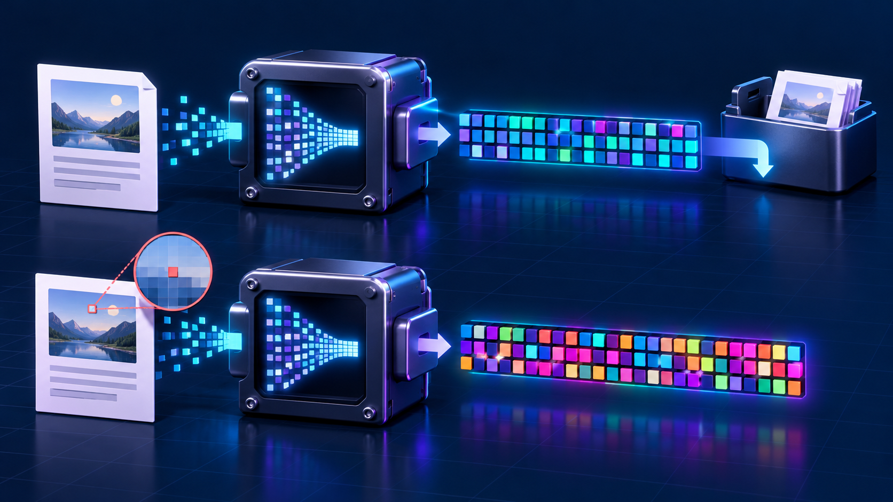

01 · Criptografia
Confidencialidade
Garante que somente pessoas autorizadas consigam compreender o conteúdo da informação.
Como proteger dados, verificar sua integridade e comprovar a autoria de arquivos por meio de aplicações interativas.
Gael Felix · Guilherme Bertero · Guilherme Francisco · João Gabriel
Conceitos essenciais
Antes de conhecer os algoritmos, precisamos entender os três objetivos que orientam as soluções apresentadas neste trabalho.
Garante que somente pessoas autorizadas consigam compreender o conteúdo da informação.
Permite identificar qualquer modificação, mesmo pequena, realizada em uma mensagem ou arquivo.
Comprova a origem do arquivo e ajuda a confirmar que ele foi assinado pela pessoa esperada.
Técnicas na prática
AES-256-GCM
RSA-2048 com OAEP

03SHA-256
Verificação de integridade · SHA-256
RSA-PSS · SHA-256 · X.509
Preparando a aplicação...